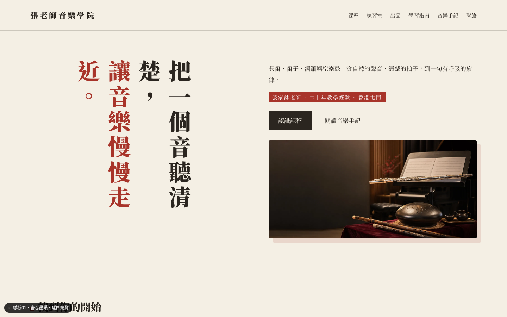
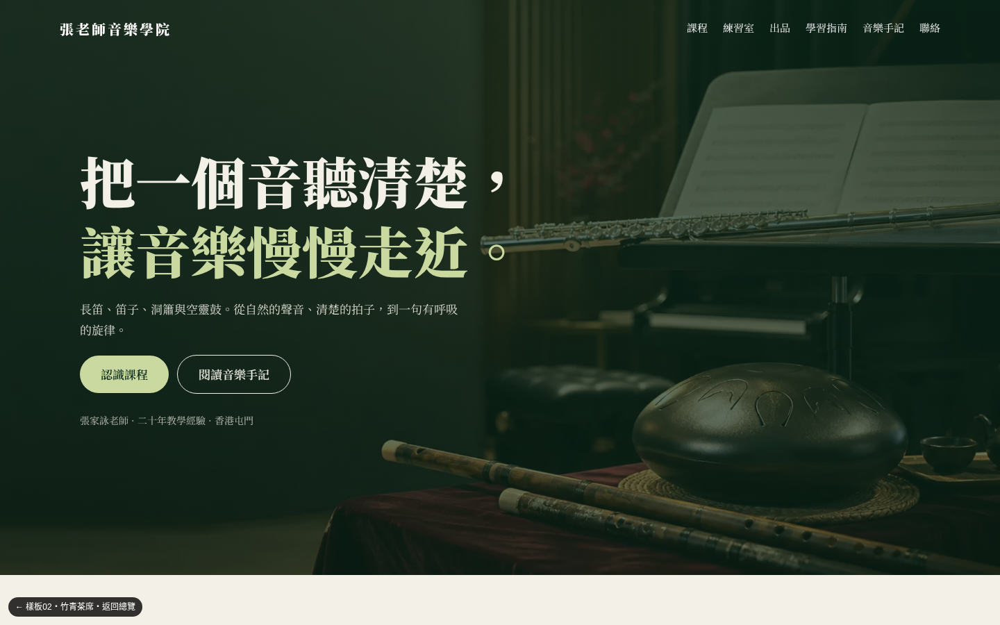
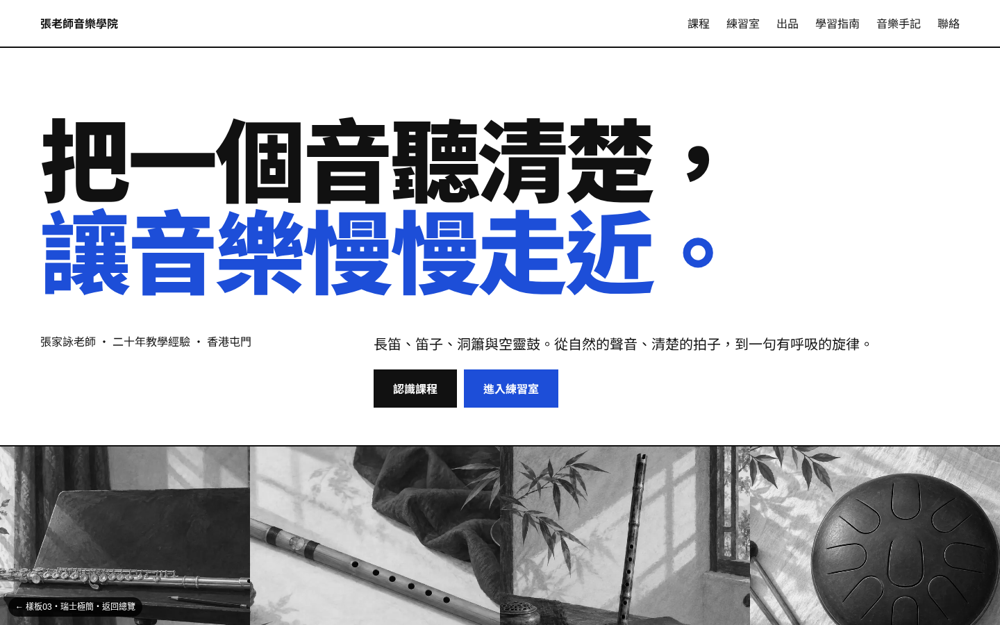
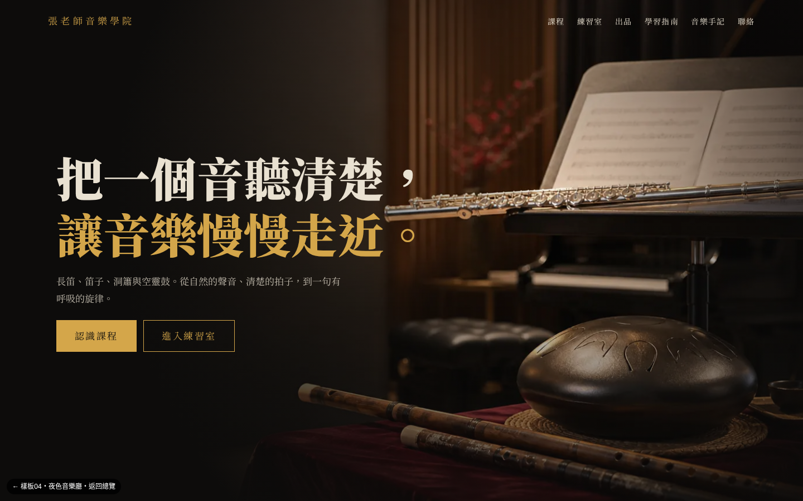
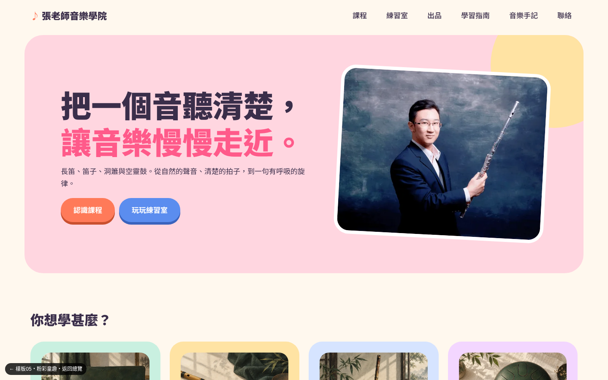
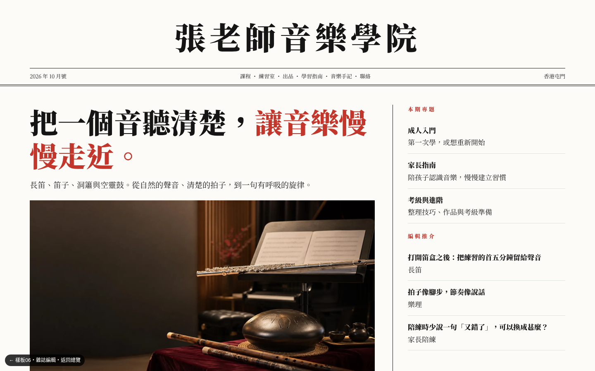
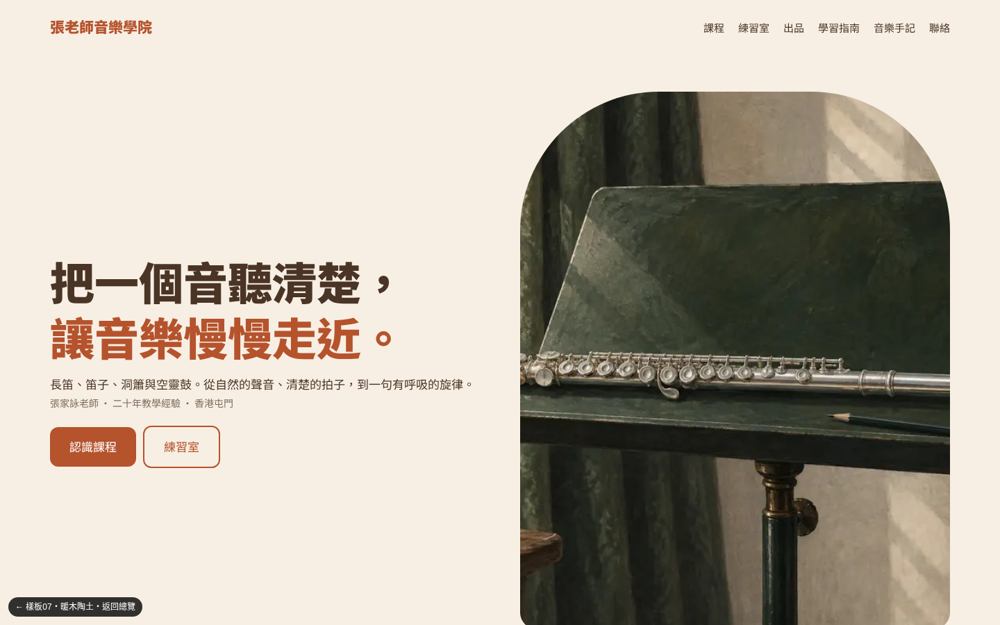
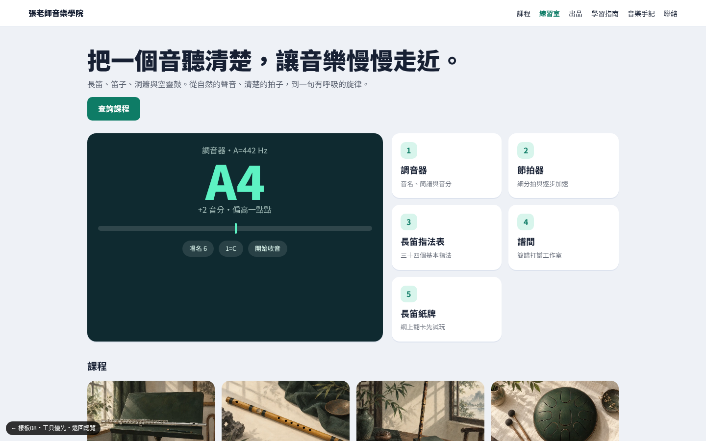
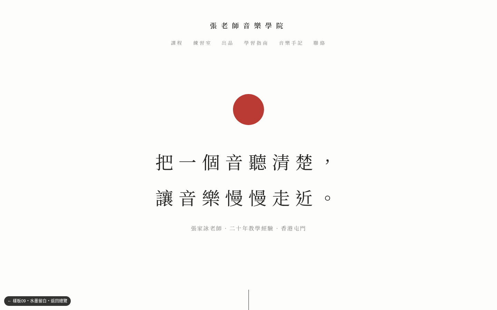

點入每款可看完整首頁。內容相同，只比較設計風格。

01 書卷墨韻暖紙色、宋體、朱紅印章點綴，延續現有書本氣質但更精緻
02 竹青茶席深竹青＋米白，全幅相片首屏，圓角相片卡，沉靜自然
03 瑞士極簡白底黑字、巨型標題、藍色點綴、列表式導覽，清晰利落
04 夜色音樂廳近黑底＋金色，電影感首屏，像音樂會節目冊
05 粉彩童趣大圓角、彩色卡片、立體按鈕，適合家長和小朋友
06 雜誌編輯報頭、多欄排版、雙線，像文化雜誌，突出 200 篇手記
07 暖木陶土陶土橙＋鼠尾草綠＋拱形相片，親切溫暖，像手作工作室
08 工具優先首屏就是調音器和練習室，像 App 儀表板，適合上課學生每日用
09 水墨留白大量留白、細線、灰階相片、僅一點朱紅，極簡東方禪意10 漸層玻璃深藍紫漸層、玻璃質感便當格，現代科技感，突出軟件與工具